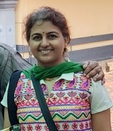

Soumya Narayanan
Education Researcher, Electrical Engineer
I like to explore engineering education challenges.
Education
| Doctor of Philosophy - Educational Technology, Indian institute of Technology, Bombay | 2015 to present |
| MTech - Electrical Engineering, Indian institute of Technology, Bombay | 2012 - 2015 |
| M.Sc - Electronic Science, University of Pune | 2001 - 2003 |
| B.Sc - Electronic Science, Fergusson College | 1998 - 2001 |
Experience
| 2015 - 2020 | Teaching assistant, IDP in Educational Technology, IIT Bombay |
| 2012 - 2015 | Research assistant, Electrical Engineering, IIT Bombay |
| 2011 - 2012 | Project Staff, Electrical Engineering, IIT Bombay |
| 2007 - 2009 | Research Associate, Excelsoft Technologies Pvt Ltd. |
| 2006 - 2007 | Software Engineer, Crystaline Infotek Pvt Ltd. |
| 2003 - 2006 | Junior Research Fellow, Dept. of Electronic Science, University of Pune |
Skills
Programming and Scripting
- C, C++
- Matlab for scripting and simulations
- Python, R for data analysis, visualization, NLP
- Hardware Description Languages: VHDL, Verilog
- CUDA for GPGPU programming
- Microcontroller based product design: 89C51RD2, ATmega168
- HTML, CSS
Ed-Tech Practice
- Curriculum, Instruction design
- Interactive content creation, curation
- Learning Management Systems (LMS), assessments, flipped classroom, blended learning, online teaching, active learning, ICT Tools
Ed-Tech Research
- Ed-Tech product design, Storyboarding and Wireframing
- Research design and methodology - Plan research briefs, data collection, research methods (Mixed methods, user centered design, interviews,
and thematic analysis, statistical analysis), interpretation, visualization
EdTech Practice
MOOC - Teaching assistant
- Designing learner-centric e-learning in STEM disciplines - NPTEL 2019
- Pedagogy for effective use of ICT for school teachers - ET611Tx 2017
Workshop - Teaching assistant
- Pedagogy training on "Effective integration of ICT tools in Engineering education",
a 2-day FDP at GMR Institute of Technology (GMRIT), Rajam, Andhra Pradesh. - "Using SEQUEL circuit simulator for teaching analog electronics",
at Father Agnel College, Navi Mumbai. Related publication
Publications
Journal Articles
- Narayanan, S., & Murthy, S. (2023). Flare-fork collaborative strategy: expanding design space via opportunistic ideation in engineering product design. Research and Practice in Technology Enhanced Learning, 18. DOI
- Narayanan, S., Sarin, P., Pawar, N., & Murthy, S. ESSENCe: Teaching research skills for experimental physics in an undergraduate electronics lab, Physical Review Physics Education Research, Accepted - 13 June 2023.
Conference Papers
- Narayanan, S., & Murthy, S. (2019). Flare-Fork: A pedagogy for expanding problem and solution space for design problem solving. In the 27th International conference on computers in education 1, 111 - 120.
- Narayanan, S. (2018). Fostering engineering students' divergent thinking skill using a collaborative learning environment. In the 26th International conference on computers in education, Doctoral Consortium.
- Lakshmi, T. G., Narayana, S., Penugonda, H., Vaidya, D., Poonia, V. S., Ganguly, S., & Murthy, S. (2017). Pivoteeing: a flipped approach in a postgraduate solid state devices course. In Proceedings of the 25th International Conference on Computers in Education, ICCE 2017. Asia-Pacific Society for Computers in Education.
- Lakshmi, T. G., Narayana, S., Prasad, P., Murthy, S., & Chandrasekharan, S. (2016). Geometry-via-Gestures: Design of a gesture based application to teach 3D Geometry. In Proceedings of the 24th international conference on computers in education (pp. 180-189). Mumbai, India: Asia‐Pacific Society for Computers in Education.
- Narayana, S., Prasad, P., Lakshmi, T. G., & Murthy, S. (2016, December). Geometry via gestures: Learning 3D geometry using gestures. In 2016 IEEE Eighth International Conference on Technology for Education (T4E) (pp. 26-33). IEEE.
- Mavinkurve.M., Narayanan.S., & Patil.M.B., (2016). Exploring effects of immersivity across three dimensions in Training Design: Technology Integration Training Workshop for Engineering Teachers in India. In Proceedings of 24th International conference on computers in education, 597-602.
- Deep, A., Prasad, P., Narayana, S., Chang, M., & Murthy, S. (2016, July). Game Based Learning of Blood Clotting Concepts. In 2016 IEEE 16th International Conference on Advanced Learning Technologies (ICALT) (pp. 526-530). IEEE.
Social Network